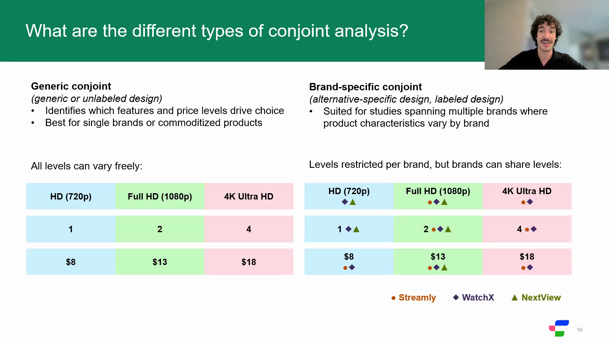

Conjoint analysis is one of the most powerful methods in product and pricing research, and for most practitioners, one of the most intimidating. I designed and delivered this webinar for Conjointly to change that: to take the fear out of the method and show a business audience exactly how it works and when to reach for it.
Rather than lecture from slides, I paired the methodology with a live study, fielded and analyzed with the audience in real time, so they could watch raw choices turn into preference insights. I closed with a Q&A and followed up with attendees one-on-one to support their onboarding to the platform.

Presenting Conjoint Analysis 101, a practitioner webinar designed and delivered at Conjointly. Click to enlarge.
Slide deck
Conjoint Analysis 101: Full Presentation